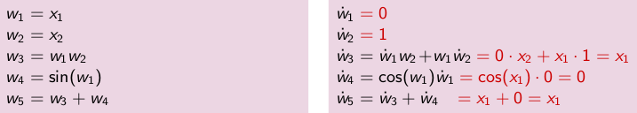
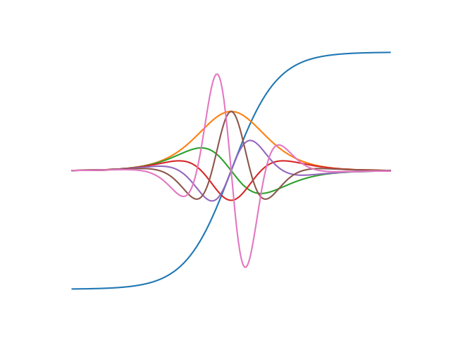
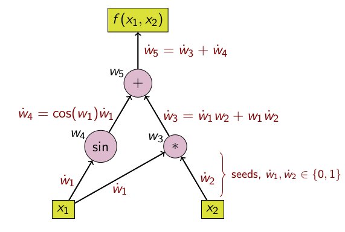
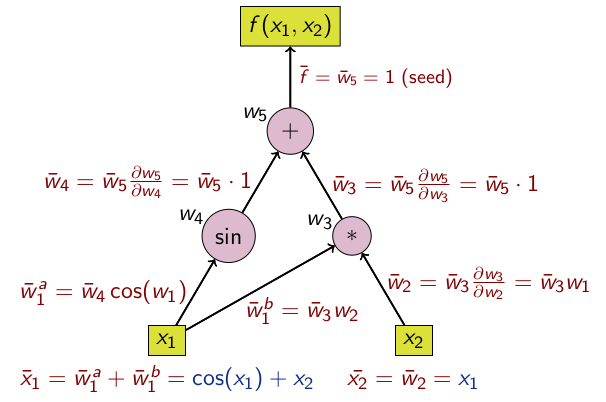
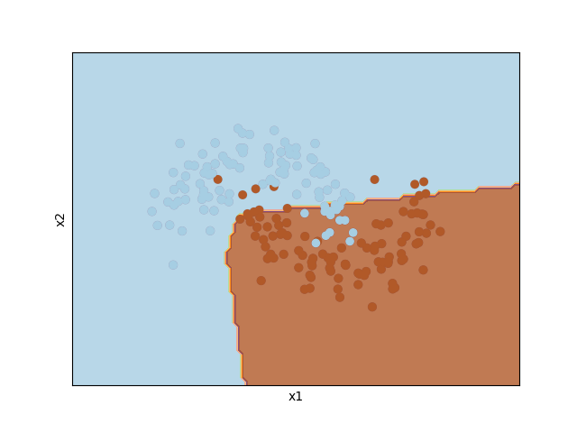

Otomatik Türev Almak (Automatic Differentiation -AD-)
Matematikte türev hesaplamanın birkaç yöntemi var; bunlardan birincisi
Calculus'ta öğretilen sembolik türevdir, diğeri sayısal türevdir. AD üçüncü
bir yöntem sayılıyor, özellikle programlama bağlamında çok faydalı bir
özelliği var, herhangi bir yazılım fonksiyonunu alıp, bir veri
noktası bağlamında, o fonksiyonun içinde ne türlü temel diğer fonksiyonlar
olursa olsun onu kendi türevini hesaplayacak hale çevirebiliyor. Burada kod
değişimi söz konusu, değişim işlem anında dinamik, ya da kaynak kod
seviyesinde derleme öncesi yapılabiliyor. Fonksiyon if, goto
gibi dallanma, koşulsal ifadeler içeriyor olabilir (ama bu ifadeler
üzerinden türev alınan değişkene bağlı olmamalıdır), $\cos,\sin$ gibi
trigonometrik ifadeler, polinomlar, $\max,\min$ gibi gayrı-lineer ifadeler,
ya da başka herhangi temel hesapları kullanıyor olabilir, son derece
çetrefil bir takım hesaplar zincirleme yapılıyor olabilir. Eğer hesap
deterministik bir şekilde yapılabiliyorsa (aynı girdiler için hep aynı
değer hesaplanıyor) AD onu alıp kendi türevini hesaplayabilen hale
çevirebiliyor.
Bu son derece kuvvetli bir özellik. Pek çok optimizasyon yaklaşımında, mesela gradyan inişi (gradient descent) minimum noktası bulmak için bir fonksiyonun türevine ihtiyaç duyar. Eğer $f(x)$ basit, analitik olarak türevi kolay alınabilen bir fonksiyon ise problem yok. Olmadığı zaman AD iyi bir çözümdür.
İkiz Sayılar (Dual Numbers)
Lineer Cebir'de ikiz sayılar reel sayıları genişleterek yeni bir öğe eklerler, bu öğe üzerinde tanımlanan cebire göre $\epsilon^2 = 0$ olmalıdır, ve $\epsilon \ne 0$ [1]. Bu yeni öğe üzerinden her sayı artık ikiz şekilde belirtilir, $z = a + b\epsilon$, ki $a,b$ birer reel sayıdır. Herhangi bir matematikçi kendisine göre bir cebir tanımlayabilir, bunu biliyoruz, operasyonlar tablolar ile tanımlanır, vs. $\epsilon^2=0$ kavramı hayali sayılardaki $i^2 = -1$'e benzetilebilir. İkiz sayıları yazılımda depolamak için $(a,b)$ gibi bir çift yeterlidir.
AD amacı için $x \mapsto x + \dot{x} \epsilon$ olarak tanımlarız, ki $\epsilon^2 = 0, d \ne 0$ kullanıyoruz, yani $x$'in kırpılmış Taylor açılımını yapıyoruz, ayrıca bu tanım bir ikiz sayı. Taylor açılımını hatırlarsak bir fonksiyon için herhangi bir $a$ noktasında $f(t) = f(a) + f'(a)(t-a)$ idi, bu durumda fonksiyon $x$'in kendisi, $f(x)=x$, açılım $x$ noktasında yani $a=x$, ve $f(x)=x=f(x)+f'(x)(x-a)$, ve $=x+f'(x)(x-a)$. Açılımdaki $x-a$ bir $\epsilon$ olarak görülebilir, zaten normal Taylor açılımı için de çok ufak bir adım olarak hesaplanmalıdır, ve bu ufak adımın karesi de normal olarak sıfıra yaklaşır. Gerçi $a=x$ olunca $x-a=0$ olur ama yeni bir cebir yaratarak bu problemden kurtulmak istemişler herhalde.
Bu şekilde oluşan aritmetiğe bakarsak,
$$ x + y \mapsto (x+\dot{x}\epsilon) + (y+\dot{y}\epsilon) = xy + x\dot{y}\epsilon + \dot{x}y\epsilon + \underbrace{\dot{x}\dot{y}\epsilon^2}_{=0} $$ $$ = xy + (x\dot{y} + \dot{x}y)\epsilon $$
Başka bir işlem
$$ xy \mapsto (x+\dot{x}\epsilon)(y+\dot{y}\epsilon) = (xy) + (x\dot(y) + \dot{x}y)\epsilon $$
Bir diğeri
$$ -(x+\dot{x}\epsilon) = -x - \dot{x}\epsilon$$
Ya da
$$ \frac{1}{x+\dot{x}\epsilon} = \frac{1}{x} - \frac{\dot{x}}{x^2}\epsilon, \quad (x \ne 0) $$
Dikkat edilirse $\epsilon$'nin katsayıları sembolik türev sonuçlarını birebir takip ediyorlar. Bu sonuçtan istifade edebiliriz, fonksiyonları şu şekilde tanımlarız,
$$ g(x + \dot{x}d) = g(x) + g'(\dot{x}d) \qquad (1) $$
O zaman mesela $\sin,\cos$ ya da pek çok diğer fonksiyonu $g$ olarak alırsak onları şu şekilde açmak mümkün
$$ sin(x + \dot{x}d) = sin(x) + cos(x)\dot{x}d $$
$$ \cos(x+\dot{x}d) = \cos(x) - \sin(x)\dot{x}d$$
$$ e^{x+\dot{x}d} = e^x + e^x \dot{x}d$$
$$ \log(x + \dot{x}d) = \log(x) + \frac{\dot{x}}{x}d , \quad x \ne 0$$
Zincirleme Kanunu, yani $f(g(..))$, üstteki açılımı da kullanarak beklenen şekilde işleyecek,
$$ f(g(x + \dot{x}\epsilon)) = f(g(x) + g'(x)\dot{x}\epsilon) $$
$$ = f(g(x)) + f'(g(x))g'(x)\dot{x} \epsilon$$
Dikkat edersek $\epsilon$'un katsayısı aynen önce olduğu gibi $f(g(..))$'nin türevini taşıyor.
Demek ki ikiz sayıları türevi alınmamış fonksiyon sonucu ve türevi alınmış değeri program içinde taşıyan veri yapıları olarak kullanabiliriz. O zaman temel bazı operasyonları (fonksiyonları) (1) formülasyonuna uyacak şekilde kodlarsak, bu temel fonksiyonları içeren her türlü diğer kompozisyon Zincir Kuralı üzerinden aynı şekilde türev alınmamış ve alınmış değerler taşınıyor olacaktır.
Örnek
Elimizde
$$ f(x_1,x_2) = x_1x_2 + \sin(x_1)$$
var. İkiz sayılar ile açalım,
$$ f(x_1 + \dot{x_1}\epsilon_1, x_1 + \dot{x_2}\epsilon_2) = (x_1 + \dot{x_1}\epsilon_1)(x_2 + \dot{x_2}\epsilon_2) \sin(x_1+x_1\dot{x_1}\epsilon_1) $$
$$ = x_1x_2 + (x_2 + \cos(x_1))\dot{x_1}\epsilon_1 + x_1\dot{x_2}\epsilon_2 + x_2\dot{x_1}\epsilon_1 $$
ki $\epsilon_1\epsilon_2 = 0$.
O zaman bir fonksiyonun türevini hesaplamak için türevi bu standart olmayan şekilde hesaplayıp, ilgilendiğimiz türevin değişkenini 1 olarak atarsak, istediğimiz türev değerini $x=a$ noktasında elde ederiz.
Eğer kod için düşünürsek, değişim şu şekilde olacak (soldaki orijinal program, sağdaki ikiz program)

Yazılmış kodu görelim,
def f(x1, x2):
w3 = x1 * x2
w4 = np.sin(x1)
w5 = w3 + w4
return w5
print 'f', f(10, 20)
h = 0.01
print u'sayısal türev', (f(10+h, 20)-f(10, 20)) / h
f 199.455978889
sayısal türev 19.1636625383
def f(x1, x2, dx1, dx2):
df = [0.,0.]
w3 = x1 * x2
dw3 = dx1*x2 + x1*dx2
w4 = np.sin(x1)
dw4 = np.cos(x1) * dx1
w5 = w3 + w4
dw5 = dw3 + dw4
df[0] = w5
df[1] = dw5
return df
print 'AD', f(10,20,1,0)
AD [199.45597888911064, 19.160928470923547]
Sembolik olarak türevin $\frac{\partial f}{\partial x_2} = x_1$ olduğunu biliyoruz Üstteki program aynı sonuca erişti.
AD için Python'da autograd paketi otomatik türev alınmasını
sağlar. Önceki örnek için
import autograd.numpy as np
from autograd import elementwise_grad
from autograd import grad
def f(x1, x2):
w3 = x1 * x2
w4 = np.sin(x1)
w5 = w3 + w4
return w5
fg = grad(f)
print fg(10,20)
19.1609284709
Dikkat: üstteki kod daha önce gösterilen ile aynı tek bir fark ile,
numpy kütüphanesini autograd'den alıyoruz, çünkü o üzerinde
AD değişimi yapılmış olan numpy.
Gradyanı, yani $x$'in her boyutu için kısmi türevi içeren vektörel olarak türevleri görmek istiyorsak,
$$ \nabla f = \left[\begin{array}{r} \frac{\partial f}{\partial x_1} \\ \frac{\partial f}{\partial x_2} \end{array}\right]$$
Yani bir değişkeni sabit tutup diğerini değiştirince elde edilen türev bu. Şimdi $x_0 = \left[\begin{array}{cc}10&20\end{array}\right]$ noktasında gradyan değerini hesaplayalım,
def f(xvec):
w3 = xvec[0] * xvec[1]
w4 = np.sin(xvec[0])
w5 = w3 + w4
return w5
fg = grad(f)
x0 = np.array([10.,20.])
print fg(x0)
[ 19.16092847 10. ]
Daha bitmedi: Altta $\tanh$'nin türevini alıyoruz, hatta türevin türevi, onun türevi derken arka arkaya 6 defa zincirleme türev alıyoruz, AD bana mısın demiyor (!).
import autograd.numpy as np
import matplotlib.pyplot as plt
from autograd import elementwise_grad
def tanh(x):
return (1.0 - np.exp(-x)) / (1.0 + np.exp(-x))
d_fun = elementwise_grad(tanh) # 1. Türev
dd_fun = elementwise_grad(d_fun) # 2. Türev
ddd_fun = elementwise_grad(dd_fun) # 3. Türev
dddd_fun = elementwise_grad(ddd_fun) # 4. Türev
ddddd_fun = elementwise_grad(dddd_fun) # 5. Türev
dddddd_fun = elementwise_grad(ddddd_fun) # 6. Türev
x = np.linspace(-7, 7, 200)
plt.plot(x, tanh(x),
x, d_fun(x),
x, dd_fun(x),
x, ddd_fun(x),
x, dddd_fun(x),
x, ddddd_fun(x),
x, dddddd_fun(x))
plt.axis('off')
plt.savefig("autodiff_03.png")

İleri, Geri
Üstte gösterilen teknik aslında ileri mod (forward mode) AD olarak biliniyor. Hesap ağaçı üzerinde göstermek gerekirse,

Geriye gitmek te mümkün, buna geri mod'u (reverse mode) ismi veriliyor.

Yapay Sinir Ağları ve AD
Derin Öğrenim için oluşturulan YSA'lar oldukca çetrefil olabilir (bkz {\em Yapay Sinir Ağları (Neural Networks)}), $\max$, evrişim (convolution) gibi operasyonlar içeriyor olabilirler. Bu ağları eğitmek için türevi elle hesaplamak çok zordur. Fakat AD tüm gereken gradyanları hesaplar, ve hataları geriye yayarak (backpropagation) ağırlıkları optimal değerlerine getirir. Şimdi basit YSA'nın AD ile kodlamasını görelim [4],
import autograd.numpy as np # Thinly wrapped version of numpy
from autograd import grad
import matplotlib.pyplot as plt
from sklearn import datasets, linear_model
np.random.seed(0)
X, y = datasets.make_moons(200, noise=0.20)
n = 2 # dimensionality
points_per_class =100
num_classes = 2
m = points_per_class*num_classes
fig = plt.figure()
plt.scatter(X[:, 0], X[:, 1], c=y, s=40, cmap=plt.cm.Spectral)
plt.xlim([-1,1])
plt.ylim([-1,1])
h = 0.05
x_min, x_max = X[:, 0].min() - 1, X[:, 0].max() + 1
y_min, y_max = X[:, 1].min() - 1, X[:, 1].max() + 1
xx, yy = np.meshgrid(np.arange(x_min, x_max, h),
np.arange(y_min, y_max, h))
X_test = np.c_[xx.ravel(), yy.ravel()]
def plot_model(scores):
Z = scores.reshape(xx.shape)
plt.contourf(xx, yy, Z, cmap=plt.cm.Paired, alpha=0.8)
plt.scatter(X[:, 0], X[:, 1], c=y, cmap=plt.cm.Paired)
plt.xlabel('x1')
plt.ylabel('x2')
plt.xlim(xx.min(), xx.max())
plt.ylim(yy.min(), yy.max())
plt.xticks(())
plt.yticks(())
# ReLU: "rectified linear unit" nonlinearity
def relu(z):
return np.maximum(0, z)
# Initialize parameters randomly
h = 10 # size of hidden layer
W1 = 0.01 * np.random.randn(n,h)
b1 = np.zeros((1,h))
W2 = 0.01 * np.random.randn(h,num_classes)
b2 = np.zeros((1,num_classes))
# Select hyperparameters
iters = 1000
eta = 1e-0
lambda_val = 1e-3 # regularization strength
def compute_loss(params):
W1, b1, W2, b2 = params
hidden = relu(np.dot(X, W1) + b1)
scores = np.dot(hidden, W2) + b2
exp_scores = np.exp(scores)
probs = exp_scores / np.sum(exp_scores, axis=1, keepdims=True)
logprob_correct_class = -np.log(probs[range(m),y])
data_loss = np.sum(logprob_correct_class)/m # cross-entropy
reg_loss = 0.5 * lambda_val * (np.sum(W1*W1) + np.sum(W2*W2))
return data_loss + reg_loss
# This is the gradient of the entire feedforward training
gradient = grad(compute_loss)
# Gradient descent loop
for i in range(iters):
# Print diagnostic
loss = compute_loss((W1, b1, W2, b2))
if i % 200 == 0: print "iteration %d: loss %f" % (i, loss)
dW1, db1, dW2, db2 = gradient((W1, b1, W2, b2))
# perform a parameter update
W1 += -eta * dW1
b1 += -eta * db1
W2 += -eta * dW2
b2 += -eta * db2
def predict(X):
hidden = relu(np.dot(X, W1) + b1)
scores = np.dot(hidden, W2) + b2
pred = np.argmax(scores, axis=1)
return pred
plot_model(predict(X_test))
plt.savefig('autodiff_01.png')
iteration 0: loss 0.693097
iteration 200: loss 0.291406
iteration 400: loss 0.277980
iteration 600: loss 0.276930
iteration 800: loss 0.276666

Daha basit bir örnek görelim, mesela Lojistik Regresyon. Elle türev almaya gerek kalmadan çok basit bir şekilde tahmin, kayıp fonksiyonları üzerinden direk rasgele gradyan inişi ile kodlamayı yapabiliyoruz.
import autograd.numpy as np
from autograd import grad
from autograd.util import quick_grad_check
from builtins import range
def sigmoid(x):
return 0.5*(np.tanh(x) + 1)
def logistic_predictions(weights, inputs):
return sigmoid(np.dot(inputs, weights))
def training_loss(weights):
preds = logistic_predictions(weights, inputs)
label_probabilities = preds * targets + (1 - preds) * (1 - targets)
return -np.sum(np.log(label_probabilities))
inputs = np.array([[0.52, 1.12, 0.77],
[0.88, -1.08, 0.15],
[0.52, 0.06, -1.30],
[0.74, -2.49, 1.39]])
targets = np.array([True, True, False, True])
training_gradient_fun = grad(training_loss)
weights = np.array([0.0, 0.0, 0.0])
for i in range(100):
weights -= training_gradient_fun(weights) * 0.1
print("Trained loss:", training_loss(weights))
print weights
('Trained loss:', 0.042172397668071952)
[ 1.40509236 -0.37749486 2.34249055]
Kaynaklar
[1] Wikipedia, Dual number, https://en.wikipedia.org/wiki/Dual_number
[2] Berland, Automatic Differentiation, http://www.robots.ox.ac.uk/~tvg/publications/talks/autodiff.pdf
[3] Griewank, Evaluating Derivatives
[4] Sheldon, Neural Net Example, https://people.cs.umass.edu/~sheldon/teaching/cs335/lec/neural-net-case-studies.html
[5] Ghaffari, Automatic Differentiation, http://www.cas.mcmaster.ca/~cs777/presentations/AD.pdf
[6] Autograd, https://github.com/HIPS/autograd
Yukarı